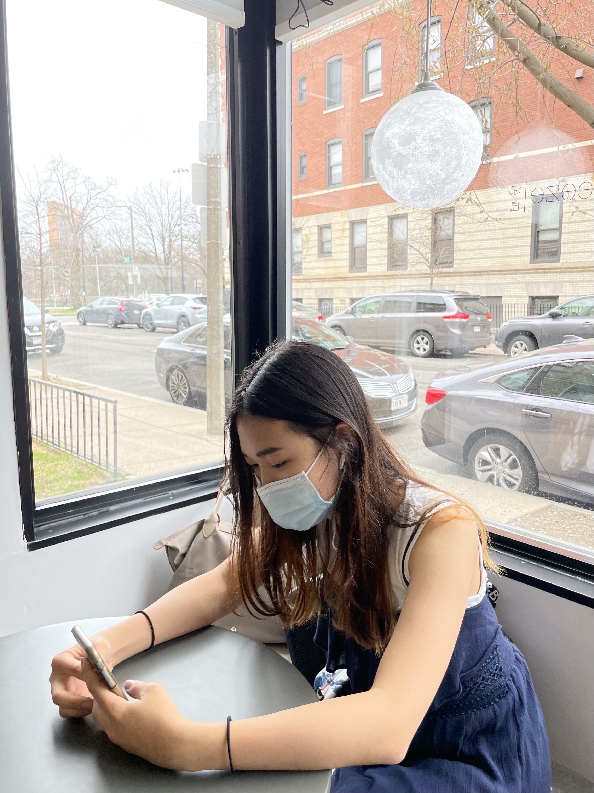

Chef Baik is nationality-wise Korean who has spent almost half of her life in Shanghai (wow international). She holds specialty in Korean
traditional cooking as well as innovation with some American style. You won't want to miss her jejube soup with fresh scallion.
Chef Zhang grew up in Shenzhen China but is now spending her 8th year in the States. She hold specialty in making Cantonese soup and Taiwanese
cuisine but Californian style. Order her signature HONGSHAO pork chop and your tastebud will have an experience of a true heaven.
Chef Takemoto is born and raised in the heart of Tokyo Japan and has now started her third year in North America. Her specialty goes beyond making
mouthwashing chicken curry and mochi. When it is fall weather, definitely do not miss her homemade rice mochi with the spice of soy sauce
We know there is always something special about the home at food: no matter it is the smell, textures or the look.
As international students traveling abroad, we have been in your boat -- Missing that one bite of homemade food at midnight before a deadline, or hoping to share the authentic taste with a friend that you have met here.
Our team is here to help through our offering of the most authentic Asian homemade food, made right in our Kitchen!